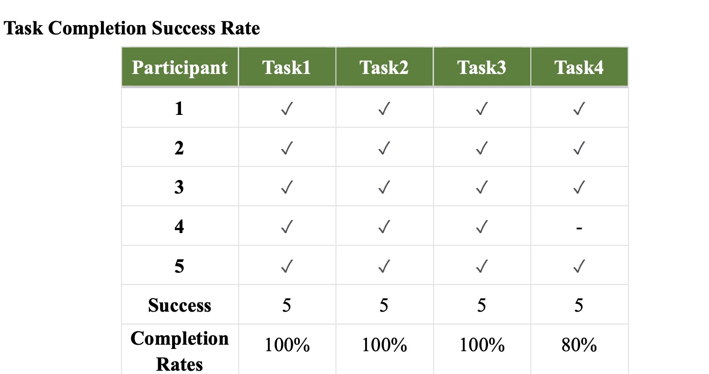
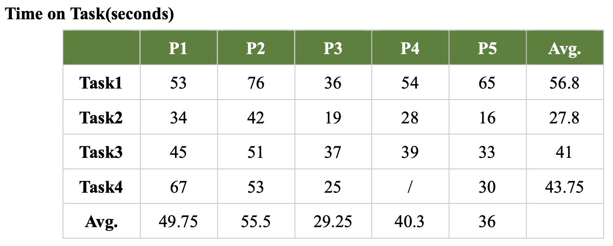
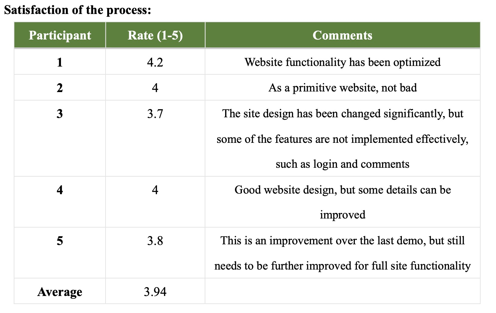
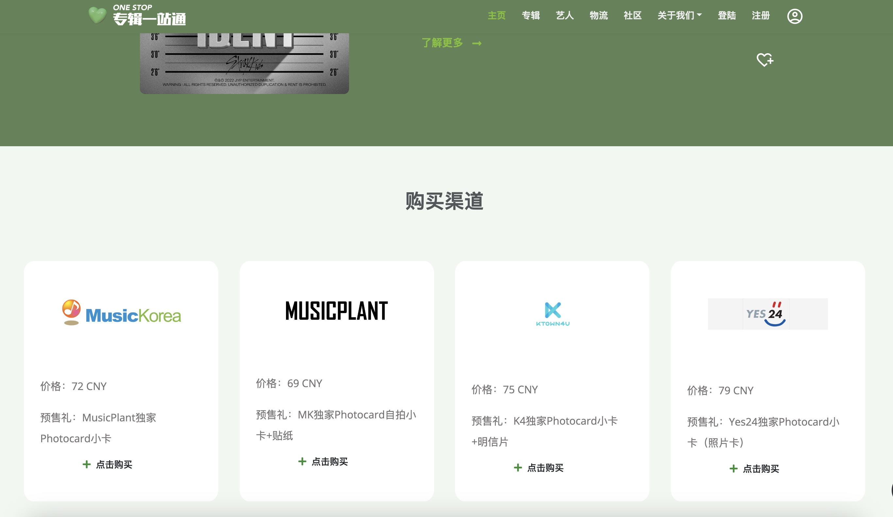
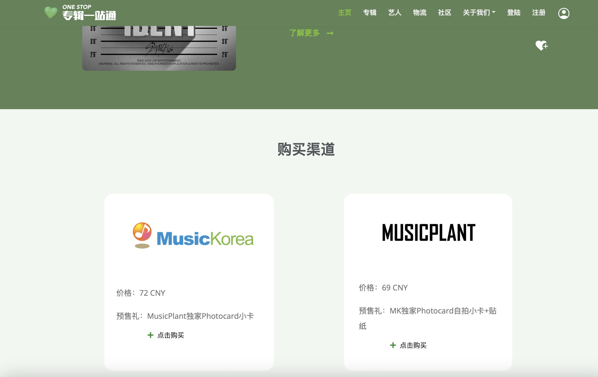
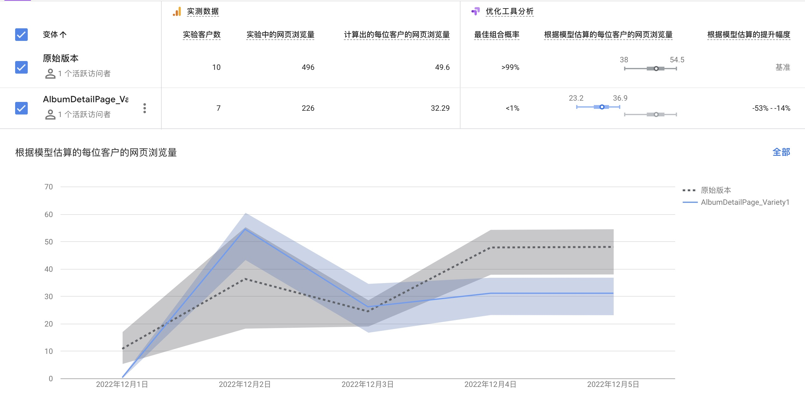

Assignment 5
Evaluate My Product Through Testing
Hi！ This is the fifth assignment of COMM5961.
After the first usability test for the Figma prototype, I gained many valuable suggestions from the testing and communication with the target customers, including adjusting the naming and sorting of the navigation bar, optimizing the community content categories, displaying user reviews on multiple pages, etc. When creating the high-fidelity prototype, I listened to the test subjects' opinions and made initial optimizations to the site's functionality and design. To further improve the current version of the prototype, I redesigned and tested it a second time.
The first test is a qualitative test to find out what the target users thought is the most influential or important issue at the current stage. I designed and conducted the A/B test by observing and interviewing users to select the issues that were controversial among them - to objectively observe which design users preferred to view quantitatively.
Usability Test 2:
I invited the four participants who participated in the previous interview and added one new participant to complete Usability Test 2. The purpose of this test was to record and analyze the usage of the product by the five target users (enthusiastic K-pop fans who like to buy albums) to find out the shortcomings of the current version of the product.
Therefore, I listed four tasks and three interview questions to verify that the site was meeting users' needs for information about album purchases：
Tasks
1. How do you evaluate the information to decide whether you want to make a purchase on a particular platform?
2. How do you complete the registration and login process?
3. How can you post a post or comment on the community page?
4. How do you check the logistics information?
Post-Test Questions
1. Please rate the overall experience of the website: 1-5
2. What difficulties did you encounter during the trial process?
3. How do you think the website should be improved?
The results showed that three of the four tasks had a completion rate of 100%, and only task 4 had a completion rate of 80%, indicating that most users were able to complete the tasks and find the target information and functions successfully.

For the completion time, the overall speed of the test 2 was faster than that of the test 1, and the average time of all five participants to complete the tasks was within the 60s, which proved that the operation complexity of the website was not high and the participants could find the target information easily and quickly.

At the same time, the average satisfaction score of participants was 3.94/5, which was slightly higher than the 3.9/5 score on the test 1. The participants think that the product is satisfactory as a demo, but it still needs deep improvement and enhancement to become a mature product.

Participant's suggestions:
- Design：
1. Optimize the design and layout of the album details page, and add album information
2. Adjust the design of some pages with too much blank space
- Function:
1. Set the protection function for some web pages, which can be viewed only after login
2. Cancel the jump function, and use the Iframes function to insert the album store website and logistics platform website inside the webpage
3. Implement page flip function
4. Add an explanation of how to use the album logistics query interface
5. Optimize the content classification function of the community
A/B Test:
The most important function of this product is to provide users with a collection of album purchase information, and improving the experience of this function is the core of this test. Since the web jumping problem mentioned by the participants in usability test 2 will be improved by the Iframes function, this test will focus on comparing the impact of the different page layouts of the album detail page on the page views.
Original version:
In the original design version, the album detail cards were displayed in a horizontal row of 4 cards, each presenting information such as prices and pre-order gifts from different album stores (See original version picture). However, in the usability interview, two participants felt that the current arrangement was too tight and did not allow for easy comparison of information, and wished that the gap between the cards could be adjusted or the number of cards in each row reduced.

Original Version
Variety 1:
In response to the participants' suggestions, the number of cards on the album detail page was reduced from 4 to 2 per row, and the size of each card was increased (the details of the cards were to be added), so that the information on each card was more prominent. (See variety 1 picture)

Variety 1
The results show that variety 1 has a slightly higher duration and pageviews per session than the original version, but the overall results are similar and there is no significant difference. The probability of the best combination for variety 1 is also slightly higher than that of the original version.

In general, by combining the results of usability test 2 and the A/B test, the card layout of the album detail page will be adjusted to expand the gap and highlight information for users to compare the information. Also, more content will be added to the album information card, including logistics channels, shipping dates, etc. In addition, based on the suggestions from the participants, I will optimize the jump function, Iframe function and community content categories to further optimize the experience of using the website.